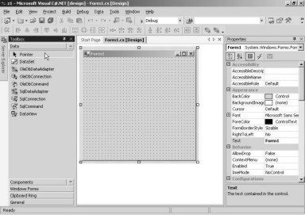
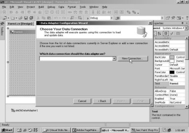
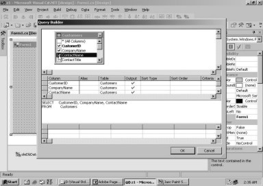
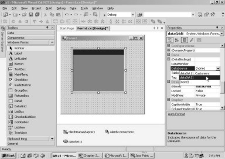
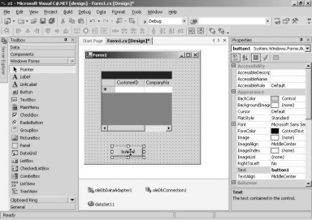
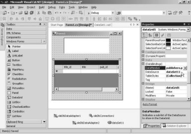

2. Building Database Applications
In this chapter, we shall devote
our time and energy writing applications that interact with databases. We would
commence by creating a new project. Though we had assured you that we would
demonstrate all the steps needed to build an application, by displaying the
corresponding screens, we shall avoid displaying the screens that have already
been shown in the earlier chapter. This will indeed save a lot of book space.
However, we shall explain all the steps, but with only the fresh screens, that
have not been shown earlier. If the screen that you obtain does not match with
our explanation, the possibilities could be that either you or we have gone
astray somewhere. At moments like these, we would request you to immediately
dispatch an email to us, describing the problem.
As was learnt in the previous
chapter, in order to create a new project, we need to click on the File menu
option and select New Project. At the New Project dialog box, we have to select
the following:
• Visual C# Projects in the Project Type pane.
• Windows Application in the Templates pane.
Believe it or not, we have
assigned the name z1 to the project after consulting an astrologer. Further,
because we want all our projects to be saved in a single subdirectory, we have
chosen the sub-directory 'vijay'. Hence, the location becomes c:\vijay. If a
project has not been closed gracefully while exiting from this product, on
restarting Visual Studio.Net, an extra line gets displayed, containing two
radio buttons relating to Solution. For the moment, we shall take it for
granted that a Solution is the same as a Project. The radio button for Close
Solution is selected. Had we closed the project while exiting, this line would
not have appeared, as was observed in the first example. Screen 2.1 displays
the options very visibly.
|
Screen 2.1 |
Click on the OK button to close
the dialog box. Also, make sure that the Properties window is visible on the
left, while the Toolbox window is visible on the right. Both these options are placed
under the View menu option, lest you forget.
The Toolbox has a tab called
Data. If we click on this tab, we will see a large number of controls that may
be employed to work with a large number of data sources or databases, as is
seen in screen 2.2.
|
 |
|
Screen 2.2 |
Thus, the toolbox segregates the
controls, depending upon where they are going to be used and their functionality.
Earlier on, we had worked on the Windows Forms controls, where we had used
controls such as the button, the progress bar, the track bar, etc. In this
chapter, we shall focus on the Database category, where we would concentrate on
the controls pertinent to Databases only.
At the outset, we commence with
an object that understands communication and interaction with databases. In the
Visual Studio.Net world, this object is termed as a Data Adapter. There are two
Data Adapters displayed in the above list, i.e. an OleDbDataAdapter and an
SqlDataAdpater. They are similar in functionality, barring a minor difference.
The OleDbDataAdapter is generic in nature, which explains why it can speak to
any database or any data source. On the other hand, an SqlDataAdapter can
communicate only with SQL Server, which is a database server from Microsoft. As
a result, the SqlDataAdapter can retrieve data relatively faster than
OleDbDataAdapter.
We select the OleDbDataAdapter
in the toolbox and then drag and drop it onto the form. Surprisingly, it places
itself at the bottom of the form, and then, a screen from the Data Adapter
Configuration wizard, appears with some text contained in it. This is shown in
screen 2.3.
|
Screen 2.3 |
To create an Adapter, a large
number of steps need to be executed. As these steps are required to be performed
in a specific sequence, the wizard lends a helping hand in guiding us through
this process. It also provides a GUI to accept the relevant values from us.
The Adapter basically requires
two types of information:
• The first one refers to the database where the data is stored.
• The second one refers to the data from this database.
After reading the opening titles
in the first screen of the Wizard, we move on to the next screen by clicking on
the Next button. Our screen should bear resemblance to screen 2.4.
|
 |
|
Screen 2.4 |
Here, we are required to provide
information about the connection that we desire to use, in order to connect to
the database. The wizard specifies a Server Explorer, which we shall delve upon
shortly. Since there are no connections at present, we create a new connection.
To do so, we need to click on the New Connection button, to obtain a screen
similar to screen 2.5.
|
Screen 2.5 |
Screen 2.6 |
It is within this dialog box,
that all the connection details are required to be keyed-in. We are not
required to specify all of them. The name of the server can be left blank,
since the Connection has the ability to internally figure out the server that
it has to talk to. The next textbox requires the 'username' and 'password'.
This has been furnished for security reasons, as the access to the database
should be restricted only to a chosen few. The most important user that is
created while installing the SQL Server database is granted an id of 'sa'. The
password assigned to this user has been left blank at the time of installation.
Thus, we enter 'sa' as the username and click on the check box that says 'Blank
Password'. On doing so, the password textbox gets disabled.
A database can contain numerous
tables, since data is normally stored in tables. Therefore, logical
organization of the tables into databases, becomes the inescapable necessity of
the hour. For example, tables pertaining to a financial application could be
stored in a database named 'finance', while those pertaining to production
could be stored in another database named 'production'.
While installing Visual
Studio.Net, Microsoft creates a large number of these databases. One such
database is called NorthWind. Clicking on the down arrow for the database,
displays a list of databases as shown in screen 2.6. Remember, we have not
created any of these databases. They have been provided as an accessory, along
with the product.
The dialog box provides a button
labeled 'Test Connection', to facilitate testing of the connection to the
database. During testing, various facets are authenticated, such as:
· Availability of the database.
· Validation of the username.
· Validation of the password.
Thus, clicking on the button
results in verification as to whether the user can connect to the database
server or not. Here, we get a message box indicating success, as shown in
screen 2.7.
|
Screen 2.7 |
If you change the name of the user
to a non-existent one, such as sa100 and then click on the Test Connection
button, an error will be generated. Working with wizards can indeed prove to be
very beneficial, since it is possible for us to verify whether we are on the
right track or not, at every stage.
Click on the OK button of the
Message Box followed by the OK button of the Dialog Box. The screen 2.8 is the
same as screen 2.4, with which the wizard started, except for the fact that
VMUKHI.Northwind.dbo is specified as the active data connection in the listbox.
NorthWind is the name of the database with which we want to establish a
connection.
|
Screen 2.8 |
Screen 2.9 |
Select the Next button and the
screen changes to the one displayed in screen 2.9.This screen requires us to select
the method to be used, to fetch data from a database. There is an international
standard called SQL or Structured Query Language. All databases in the world
use and understand SQL. This standard or language has a list of words that
fetch data from databases.
Another way of retrieving data
is, by using Stored Procedures. It refers to executing program code residing on
the server. Here, we select the SQL option, which is the default selection, and
then, click on Next button to arrive at screen 2.10.
|
Screen 2.10 |
Screen 2.11 |
In this screen, the blinking
cursor in the big textbox indicates, that we are expected to write an SQL
statement to retrieve data from the database. Most of us are obviously not
conversant with SQL at this point in time, nor are we aware of the tables and
fields present in the NorthWind database. Don't feel vexed, as the Query
Builder comes to the rescue. Click on the Query Builder button and the display
changes to screen 2.11.
A dialog box pops up, exhibiting
a list of tables, from where the data can be fetched. Thus, there is no need to
examine the tables that are present in the database. We are interested in the
'Customers' table. So, we select it and then click on the Add button. Clicking
on the Add button results in the display of a graphical block in the
background, as shown in screen 2.12. As we are not interested in any more
tables from the database, we select the Close button.
|
|
 |
|
Screen 2.12 |
Screen 2.13 |

The screen now gives a clear
indication that the graphical block refers to the columns in the table. We
chose the first three fields, i.e. CustomerID, CompanyName and ContactNameby by
selecting the relevant check boxes. Once this is done, notice the changes in
the screen. We have depicted this in screen 2.13. This screen displays 4 panes.
The first pane contains the tables with their fields. Presently, we are
interested in working with a single table. The second pane explicitly displays
the selected fields; while the third pane is an SQL Select statement that is
generated, based on the fields selected. This statement is given below:
SELECT CustomerID, CompanyName, ContactName
FROM Customers
The fourth pane is blank. We
will discuss it at an appropriate time. Click on the OK button and you will
come to screen 2.14, where the SQL statement is clearly visible.
|
Screen 2.14 |
The power of SQL comes to the
fore, when there are multiple tables.
The word SELECT in SQL, is the only command that can be used to retrieve
data from a database. This command is then provided with the fields from the
table. The word FROM is a reserved word, and is always followed by the name of
the table. In our case, it is Customers. We leave it upto you to decide whether
you would like to write the above SQL statement yourself, or you wish to hire
the services of the Query Builder, to do it for you. Click on the Next button
to proceed to the next screen.
|
Screen 2.15 |
A click on Next button brings up
screen 2.15, which distinctly indicates to us that everything went off well.
The Adapter has created the following:
• The Select statement, to extract data from the database.
• The Update statement, to make changes in the data of the database.
• The Insert statement, to insert data into the database.
• The Delete statement, to delete data from the database.
|
Screen 2.16 |
Clicking on the Finish button,
brings us to screen 2.16. The wizard not only creates an Adapter object, but also
a Connection object. Visual Studio.Net names the Adapter object as
oleDbDataAdapter1, and the Connection object as oleDbConnection1. All is not
over yet, as we have still to create another object that will store all the
data that is to be retrieved. This new object or container is called a DataSet.
To create a DataSet, we simply
click on the Data menu and select the Generate Dataset menu option, as is seen
in screen 2.17.
|
Screen 2.17 |
This is one menu option that
does not hold too many options. After we click on this first option, a dialog
box gets displayed on the screen, as we see in screen 2.18.
|
Screen 2.18 |
The first question that is
always tossed at us is, whether we want to reuse an earlier created data set, or
we wish to create a new one.
Bear in mind that Visual
Studio.Net would like you to reuse things, so that you do not commit mistakes,
while re-creating them over and over again.
The dialog box asks us to enter
the name of the DataSet. DataSet1, which is the name that is specified here,
has to be provided at the time of referring to the DataSet. So, you need to
commit it to your memory. Further, a list of tables that this data set would
comprise of, is provided in the next block.
Presently, only the Customers
table is available. So, DataSet1 refers to this table. However, a DataSet
object can represent a large number of tables.
A list of tables associated with
the Adapter, is displayed in this block. The checkbox labeled as 'Add to
Designer' is left checked, and then we click on the OK button. This transports
us to screen 2.19.
|
Screen 2.19 |
Upto this point, the DataAdapter
control has created the Connection control, and the DataSet control has used a
table from the DataAdapter.
As the next step, we select
Windows Forms in the toolbox window, in order to see the Forms based control.
Then, we choose a data grid object and drag and drop it onto the form. This is
clearly seen in screen 2.20.
|
|
|
Screen 2.20 |

The screen displayed, has the control
enlarged vertically and horizontally, in order to facilitate the display of
more data in the data grid control. Press F5 to run the program.
|
|
|
Screen 2.21 |

At this stage, screen 2.21 shows
up, which is an empty data grid, with neither any column names nor any data.
This is a consequence of our not having specified the source from where the data
is to be retrieved, in the data grid control.
Close the window and select the
data grid in the Design Form. Thereafter opt for the Data Source property.
When you click on the down
arrow, a list of DataSets is displayed. Presently, our screen 2.22 depicts only
one data set, which is the one that we had created most recently.
|
 |
|
Screen 2.22 |
Thus, we have clearly specified
that the data grid control will use the data, which is stored in the dataset
named dataSet11. Also, note that the form design changes, to display a + sign
within it, screen 2.23. Let us now run the program to see what transpires.
|
Screen 2.23 |
Screen 2.24 |
The screen 2.24 displays a plus
sign, which is similar to what was seen in the Form Design. Once we click on
the + sign in this screen, the + sign becomes a - sign and the label of
Customers is displayed, as shown in screen 2.25.
|
Screen 2.25 |
Screen 2.26 |
The label Customers is displayed
as an aftermath of the fact that, we have only one table called Customers in
the DataSet. In the situation where we would have had more tables, all of them
would have been displayed, one below the other.
Selecting or clicking on the
hyperlink of Customer will lead us to screen 2.26, where three fields are
displayed, with each of them having a value of Null. The three fields are the
three column names that we had chosen while generating the SELECT statement.
Also, the title is shown as DataSet1, and not as dataSet11.
To display the data in the
datagrid control, first close the running application, and then, make sure that
the Data grid is selected.
If you select the property of
DataMember and click on the down arrow, you will see screen 2.27.
|
Screen 2.27 |
The Data Member displays a list of
tables. We can see only one table, since only a single table named 'Customers'
is present in our dataset. This Data Member property can be selected, only
after we have specified a data set as a Data Source.
Select the Customers table and
notice the change in the Data Grid on the form, this is shown in screen 2.28.
|
Screen 2.28 |
Thereafter, run the application and
you will come across screen 2.29.
|
Screen 2.29 |
The + sign is no longer visible,
and the list of tables has also vanished. All this can get pretty confusing for
a user. The data grid directly displays the columns from the Customer table.
This is because, the Data Grid control uses the DataSource member to find the
tables contained in it, whereas the DataMember property, when initialized,
refers to a specific table in the dataset.
Leaving the DataMember property
blank, will again result in a display of a list of available tables to select
from.
The columns in the field still
depict null values. In order to display data, we first take a button from the
toolbox and then drag and drop it onto the form.
|
 |
|
Screen 1.30 |
Then, we double-click on the
button to reach the Code Painter, where we write the following line of code:
oleDbDataAdapter1.Fill(dataSet11);
The Adapter control has a
function called Fill, which accepts a data set as a parameter. It then associates
data with this data set. As of now, the data set control does not display any
data. This is because the data set control is not aware of the data that it
would receive.
|
Screen 1.31 |
It is the Fill function from the
Adapter class, which connects to the database using the connection control. It
then retrieves data from the database and passes it to the data set. Once the data
set obtains the data, it can then pass it on to the Data Grid for display.
Pressing F5 would initially
display the columns without any data. When we click on the button with the
default label button1, the Fill function does its job and populates the data
grid. Therefore, the screen displays the data grid with values obtained from
the customer database, as seen in screen 2.32.
|
Screen 2.32 |
One simple click executes the
task of loading the data grid. It cannot get any easier!
The next task on hand is to
allow the user to change the data. Obviously, any such change should be
reflected in the database too. To achieve this goal, we once again introduce a
button from the toolbox, and add the following line of code to it:
oleDbDataAdapter1.Update(dataSet11);
In the Adapter control, there is
another function called Update, which is similar to the Fill function. This
function takes the data associated with a data set and changes it permanently
in the database, thereby, updating the database.
On running the application, we
see two buttons and the datagrid control. The first button is used to display
the data from the database, while the second one is used to update the
database. Select the second record and change the name of the company to 'Vijay
Mukhi'. Thereafter, click on the button labeled button2. This is shown in
screen 2.33.
|
|
|
Screen 2.33 |

Clicking on button2 does not
achieve anything stupendous. So, how in the world are we to confirm that the
database has been updated? To do so, close the running application and re-run
it. On doing so, the second record will display the freshly modified value as
'Vijay Mukhi'.
There are a myriad other things
that we can do with a data grid. For
example, sorting a column, reversing the order of the sort, etc. Everything
regarding a data grid can be subjected to change. You can take our word for it!
Let us now proceed to another
data handling example, which demonstrates the Master-Detail Relationships.
We create a new project by
selecting File - New - Project. In the New Project Dialog Box, as usual, we
choose Visual C# projects in the Project Types pane, and Windows Application in
the Templates pane. Then, we name the application as z2 and maintain the location
as C:\vijay. Click on the OK button to arrive at the Screen Painter. You should
ensure that the ToolBox window is activated and the Properties window is
visible.
In ToolBox window, click on the
Data tab to select the OleDbDataAdapter control. As we had learnt a little
while ago, the Adapter Wizard gets activated when the Adapter control is
dragged onto the Form.
The first screen may be ignored.
So, you can simply click on the Next button. Unlike the earlier case, where a
connection was established to the NorthWind database, we now choose a different
database named the Pubs database. Therefore, click on New Connection. The user
name will be 'sa' with a blank password and Pubs will be the database for the
server. Finally, to ensure that the right settings have been selected, click on
Test Connection. Once the connection test proves successful, click on OK. We
would request you to note down the name assigned to the connection, since it
will be used from time to time in the application.
Clicking on the Next button will
take us to the Query Type dialog box. Just as before, we choose the default SQL
statements and then click on Next. In
the text area, we need an SQL statement, which you can either write yourself or
employ the services of the Query Builder for it. Either way, the final SQL
statement should be as follows:
SELECT pub_id, pub_name FROM publishers
The above SQL retrieves the id
and the name of the publisher from the table called 'publishers'. Finally,
clicking on Finish will create both, an Adapter and a Connection object. We
however do not stop at this. Click on the OleDbDataAdapter control again and
drag and drop it into the screen painter. This will create one more Data
Adapter object called oleDbDataAdapter2, and it will again display the wizard.
The first opening screen can be
skipped without any harm done. So, click on the Next button. The connection
that has been established to the pubs database, i.e. 'VMUKHI.pubs.dbo' in our
case, is displayed in the listbox. In case it is not displayed as selected,
click on the down arrow of the listbox and then select it. We would be
employing the same connection. Therefore, there is no point in recreating
another connection object.
Click on the Next button, since
we would like to use SQL statements, the default option, while accessing the
database. Clicking on the Next button brings us to a screen where we have to
specify the SQL Select statement. Enter the statement as follows:
SELECT title_id, title, pub_id, price FROM titles
The pubs database has a table
called 'titles', from where the title id of the book, its name, the publisher
id and the price are to be retrieved. Like before, we can either enter the
query ourselves or use the Query Builder.
Finally, click on the Finish
button. On doing so, you will witness something strange i.e. the adapter has
not created any new connection. This is because, the same connection is being
reused.
|
Screen 2.34 |
The next step in sequence is, to
create a Data Set Object or a Container for these two tables. So, we click on
the Data Menu and choose Generate Dataset.
|
Screen 2.35 |
In the dialog box, we select the
New radio button, and make sure that both the tables are selected, as shown in
screen 2.35. The name of the adapter changes, depending upon the table that is
involved. The checkbox next to the 'Add this database to designer' option, is
checked by default, and we do not intend to change it.
Visual Studio.Net maintains a
list of all the files generated for the current project. This is visible in a
window called the Solution Explorer. Click on the View menu and then Solution
Explorer in order to display this window, as is evident in the screen 2.36.
|
Screen 2.36 |
The Solution Explorer lists out the
files contained in the project or solution.
Solution z2 contains the
following files:
• A form named Form1.cs.
• A C# program named AssemblyInfo.cs.
• The References, which talks about all the things that the project refers to.
• An xsd, having the same name as the DataSet.
While generating a DataSet, an
xsd file is created, which stores information about the tables obtained from
the respective adapters. Thus, the file DataSet1.xsd is created. Double
clicking on the DataSet1.xsd in the Solution Explorer, results in the display
of screen 2.37.
|
Screen 2.37 |
The above screen shows fields of
the two tables belonging to the DataSet. The 'key' icon indicates the primary
keys. A primary key in a table is a field that contains unique values, thus
facilitating identification of different records. In the publishers table, each
publisher is given a unique id named pub_id, while in the title table, the
unique id is the title_id of every book.
The 'titles' table contains
records for every book, or the title that the book publishing company
publishes. Different books are bound to have different publishers. Hence, it
makes no sense to insert all the details about each publisher with each book.
At times, multiple books are published by the same publisher. As a result, we
would be storing the same data pertaining to a publisher over and over again,
leading to redundancy.
While storing the details of the
publishers in the publishers table, a unique publisher id is provided to every
publisher. In the 'titles' database, only the publisher id is provided with
each book, along with other title details.
This approach is called a
Master-Detail relationship or a Parent-Child Relationship, where 'publishers'
is the parent and the 'titles' is the child. It is also commonly referred to as
a 'One to Many Relationship', reiterating the fact that one publisher may
publish many books.
If you are observant enough, you
would have noticed that the ToolBox now carries a new tab called XML Schema.
Select the Relation object and drag-and-drop it onto the window. By merely
dropping it onto the window, an error will be generated in a message box,
conveying that the object cannot be placed at that position.
A Relation object has to be
dragged-and-dropped over the child table, which in this case, is the 'titles'
table. On doing so, you will arrive at the screen shown in screen 2.38.
|
Screen 2.38 |
The name assigned to the
relation is publisherstitles. You may change it if you so desire, but you must
commit it to memory, since it will be needed while referring to this relation
object.
Let us take a re-look at what we
have accomplished so far. The parent table is 'publishers' and the child table
is 'titles'. The field pub_id is a primary field in the 'pubs' table, whereas,
the field title_id is the primary field in the 'titles' table. The pub_id field
links both the tables. In the titles table, the pub_id field is termed as a
foreign key.
|
Screen 2.39 |
After clicking on OK, a new
screen that gets displayed is shown in the screen 2.39, where we see a relation
object joining them. You may observe that the parent table named 'publishers',
contains a circle; while the 'titles' table has three arrows pointing towards
it. This symbolizes a 'one to many relationship'.
In the Solution Explorer window,
double click on the file Form1.cs, in order to revert back to the Screen
Painter. In the ToolBox, there is a listbox in the category of Windows Forms.
Select the listbox and drop it onto the form painter. The screen 2.40 displays
the form.
|
Screen 2.40 |
The properties window of the
listbox has a property called Data Source. Clicking on the down arrow, displays
a list of data sources, as is apparent in screen 2.41. We choose the data set
named dataSet1.
|
Screen 2.41 |
A data set comprises of multiple
sets of data. To clearly select a specific data table, we must initialize the
Data Member appropriately. The listbox displays two tables, i.e. publishers and
titles. As we want a list of publishers to be displayed in the listbox, we
expand the publishers node by clicking on the + sign. Screen 2.42 and screen
2.43 depict the steps that are involved.
|
|
|
|
Screen 2.42 |
Screen 2.43 |

As it is the name of the
publisher, and not the publisher id, that we want to see displayed in the list box,
we select the pub_name field. The property Display Member now shows
publishers.pub_name (i.e. tablename dot fieldname). The screen 2.44
demonstrates this syntax.
|
Screen 2.44 |
Now, make sure that the form is
selected and then double click on it. Double clicking on any object transports
us to the Code Painter. Insert the following lines of code at the cursor
position:
oleDbDataAdapter1.Fill(dataSet11);
oleDbDataAdapter2.Fill(dataSet11);
This code gets executed whenever
the form loads on. The Fill statement, as we had learnt earlier, fills up the
Dataset with data. A point of significance here is that, each adapter fills up
one table in the data set.
When we run the program by
pressing the F5 key, we see a listbox that contains the names of publishers
from the 'publishers' table. This is shown in screen 2.45.
|
Screen 2.45 |
Close the running application,
in order to arrive at the Screen Painter.
Select a data grid from the Windows Form category in the toolbox, and thereafter,
drag-and-drop it onto the Screen Painter. You should size the data grid and
listbox as shown in screen 2.46.
|
Screen 2.46 |
Then, select the Data Source
property and choose the data set dataSet11. The data member is initialized to
the value of publishers.publisherstitles. You may remember that, we had created
a relation object named publisherstitles. These changes are shown in screen
2.47. As a consequence, with every change in the name of the publisher, the
records retrieved from the titles table shall also vary.
|
 |
|
Screen 2.47 |
On running the application, a
form window similar to the one shown in screen 2.48 will show up. The screen 2.49 reveals that the publisher 'New Moon
Book' has published 5 books, whereas, the publisher 'Algodata Infosys' has
published 6 books.
|
Screen 2.48 |
Screen 2.49 |
The above is an ideal example to demonstrate a parent-child relationship, where every publisher in the listbox, is displayed along with its corresponding titles in the data grid. The important point here is that, the DataMember property of the DataGrid points to the relation object, since it stores the details of the relationship.